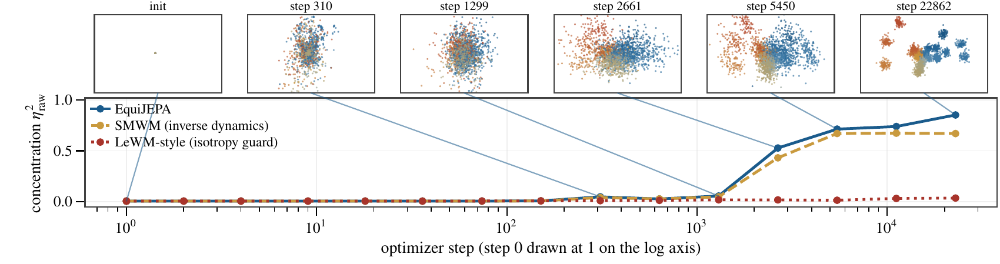
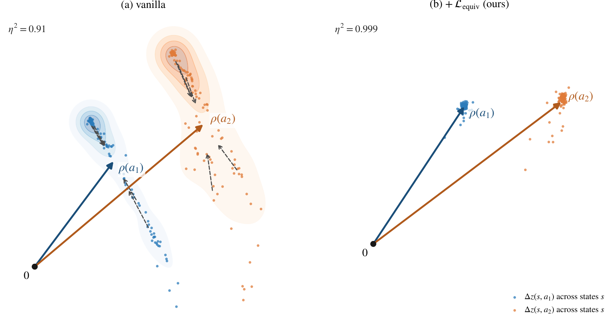
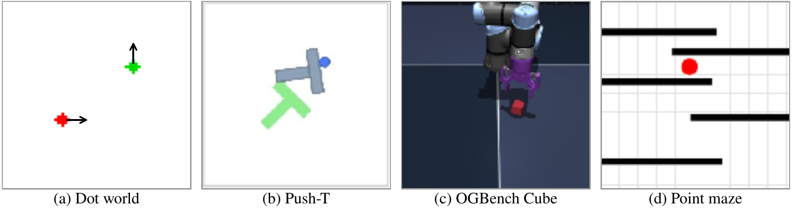
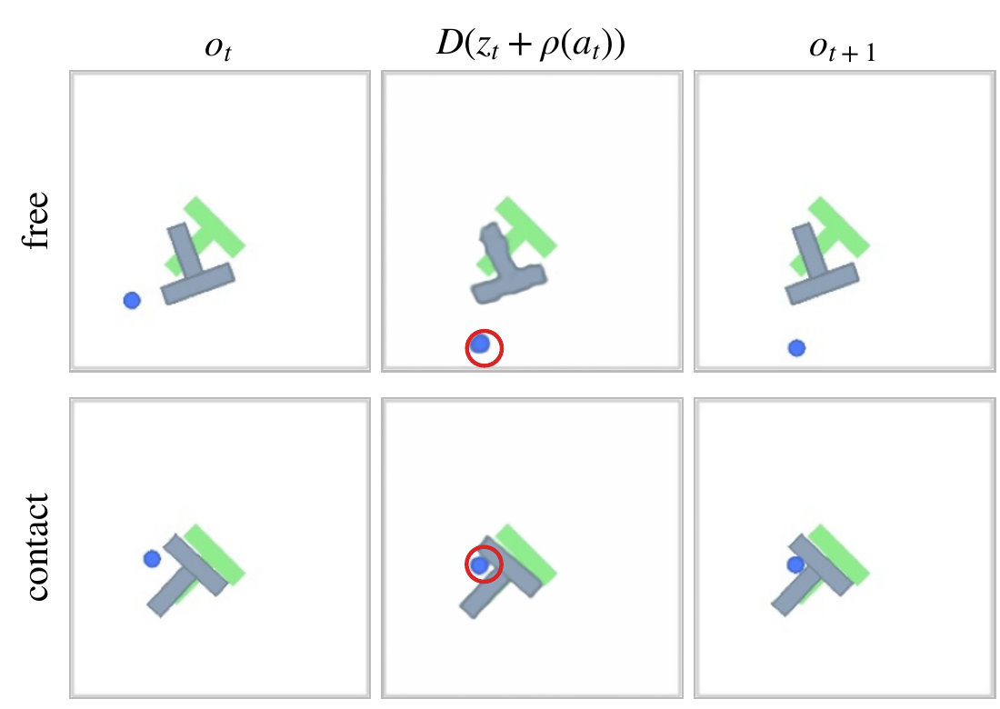
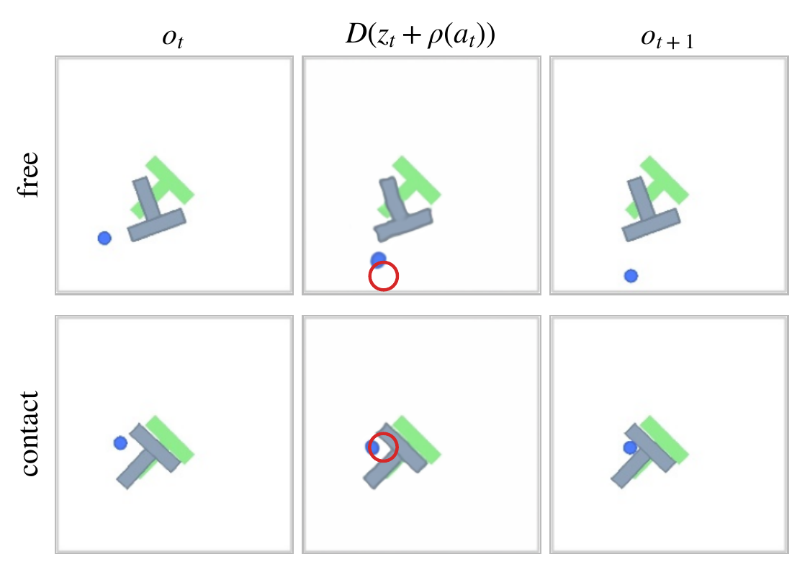
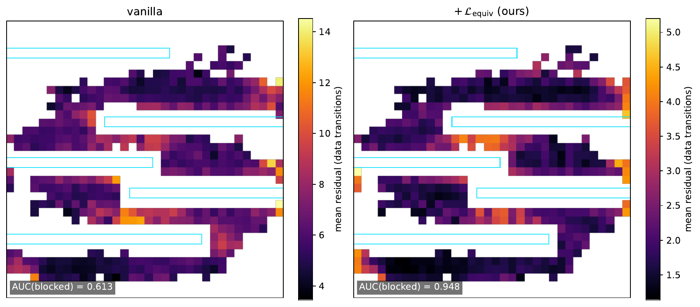
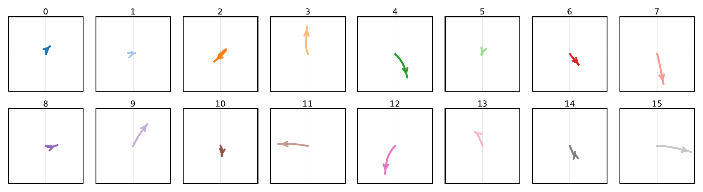
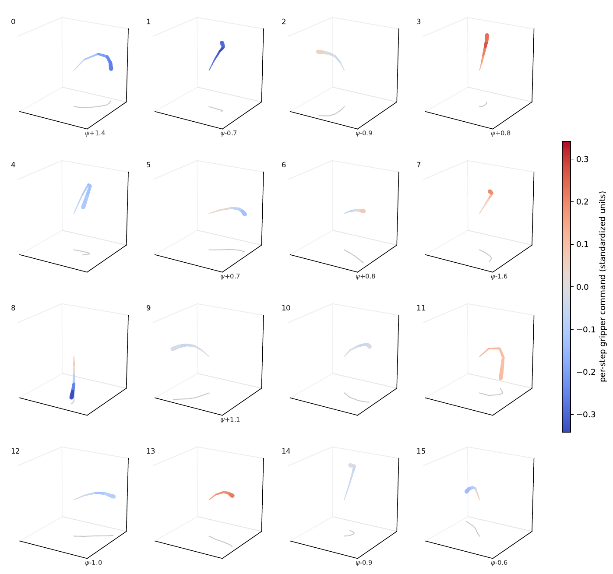
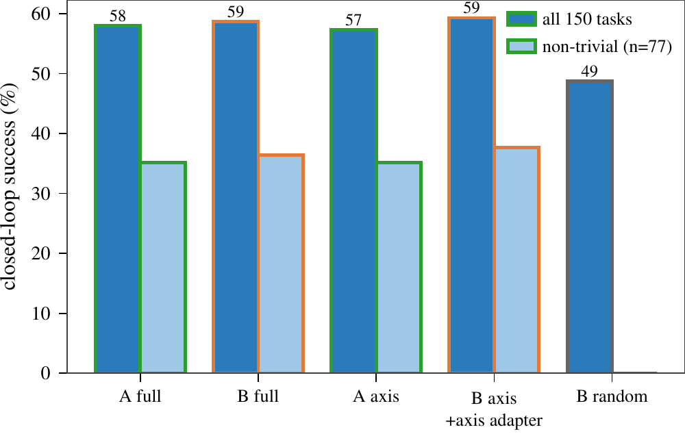

Abstract
Latent world models learn to predict future states from the current state and an action, and are often also trained to recover the executed action from a pair of consecutive states. However, these methods do not require the same action in different states to produce similar latent transitions, so learned representations need not transfer to new states or add up predictably. We call this missing property action equivariance. We introduce EquiJEPA, which jointly learns a latent world model and an effect head that predicts latent transitions from actions alone. Because the head cannot see the state, reducing its loss requires the encoder to make the same action produce similar latent transitions across states, forming a shared action prototype. These shared prototypes can then be applied at new states or added together, with the inverse head translating the resulting transitions into executable actions.
We evaluate these operations across four simulated environments, testing whether learned action prototypes can be combined, executed from new states, and reused across command interfaces. In all four, EquiJEPA makes the latent transitions of each action more consistent across states than the base model does, while keeping agent and object state decodable. Its action prototypes also execute more accurately at new states, compose into unseen action combinations, and carry over to a new command interface.

About the background animation
The animation behind the title is recorded from EquiJEPA training in the two-dot world (λeq = 10). Each point is the latent transition Δz of one of 24 actions that move the first dot, executed from the same 200 starting states; the states are re-encoded at every saved checkpoint. The 2-D projection is fixed and comes from the final checkpoint, and frames between checkpoints are linearly interpolated. The counter is η²raw over the 24 actions: 0.065 at initialization and 0.999 at step 19,600.
Method

The base model is an inverse-dynamics JEPA (SMWM): the predictor estimates zt+1 from (zt, at) and the inverse head recovers at from (zt, zt+1). EquiJEPA adds an effect head ρ that sees only the action:
ℒ = ℒpred + λinv ℒinv + λeq ℒequiv
For a fixed encoder, the best state-blind head outputs the mean latent transition of each action, E[Δz | a]. The loss that remains is the variance of Δz within each action, and only the encoder can reduce it. Training therefore concentrates the latent transitions of one action around a shared action prototype ρ(a). The remainder Δz − ρ(a) is the interaction residual; it contains contact effects, encoder error, and other state-dependent parts. The equivariance loss alone admits a constant representation; the inverse loss prevents this collapse, and the predictive loss keeps state-dependent outcomes, such as a push that moves the block only when the agent touches it.
Why inverse dynamics is not enough. Decoding the action from Δz only requires different actions to stay distinguishable. A decoder can read the action from a few latent dimensions while the other dimensions vary with the state, so perfect decoding is compatible with any amount of within-action variation (Proposition 1 in the paper).
Measurement. Controlled-replay concentration executes each action from many starting states and reports η²raw = tr B / tr T, the fraction of latent-transition variance explained by the action; 1 means every execution of an action gives the same Δz. Action fit is the held-out R² of a regressor that predicts Δz from the action on logged trajectories, which does not need simulator resets.

Environments

The dot world is a 64×64 arena with one or two controlled dots; each action is a pixel displacement, so the physical outcome of every action and composition is known exactly (CNN encoder, d = 64). The pixel-based tasks use the LeWM stack with a ViT-Tiny encoder (d = 192): Push-T with 5-step action chunks, OGBench cube-single, and Maze with 20 training and 5 held-out corridor layouts. The base model has the same encoder, predictor, inverse head, budget, and data as EquiJEPA and differs only in λeq = 0. We also compare a LeWM-style model (the LeWM isotropy guard instead of inverse dynamics) and frozen DINOv2 features (DINO-WM-style). Unless stated otherwise, results use three paired model seeds.
Transition concentration
In all four environments EquiJEPA has the highest action fit and controlled-replay η²raw, and on the pixel-based tasks its action fit improves over the matched base for all three paired seeds. The base recovers actions from latent pairs, but its concentration stays lower, for example 0.747 versus 0.910 on contact-free Push-T and 0.570 versus 0.872 on Cube. LeWM-style and DINO-WM-style representations stay between 0.033 and 0.112 under replay. On Push-T and Maze, contact and collision lower concentration for the base and EquiJEPA, because the transition then depends more on the state.
| environment | metric | LeWM-style | DINO-WM-style | base (SMWM) | EquiJEPA |
|---|---|---|---|---|---|
| Dot world, one dot | action fit | – | – | 0.821 ±0.013 | 0.9998 ±0.0001 |
| replay η² | – | – | 0.836 ±0.010 | 0.9997 ±0.0001 | |
| Dot world, two dots | action fit | – | – | 0.888 ±0.018 | 0.9989 ±0.0005 |
| replay η² | – | – | 0.895 ±0.014 | 0.9987 ±0.0007 | |
| Push-T | action fit | 0.019 ±0.003 | −0.061 | 0.688 ±0.014 | 0.869 ±0.002 |
| replay η², free | 0.104 ±0.003 | 0.112 | 0.747 ±0.015 | 0.910 ±0.001 | |
| replay η², contact | 0.043 ±0.001 | 0.070 | 0.605 ±0.022 | 0.833 ±0.003 | |
| Cube | action fit | 0.100 ±0.007 | 0.073 | 0.825 ±0.009 | 0.947 ±0.003 |
| replay η², sustained grasp | 0.033 ±0.0004 | 0.050 | 0.570 ±0.026 | 0.872 ±0.005 | |
| Maze | action fit | −0.052 ±0.032 | 0.010 | 0.326 ±0.053 | 0.687 ±0.028 |
| replay η², free | 0.061 ±0.018 | 0.052 | 0.481 ±0.047 | 0.777 ±0.049 | |
| replay η², collision | 0.080 ±0.028 | 0.057 | 0.206 ±0.014 | 0.394 ±0.027 |
Explore the latent transitions
Each point is one latent transition Δz: 24 designed action chunks (on Push-T, 8 directions × 3 magnitudes), each executed from the same 96 starting states, shown in the top three principal components of each representation. Hue is the commanded direction and shade the magnitude. Drag to rotate, scroll to zoom, and click a point to highlight the 96 executions of that action and see the commanded chunk. dictionary (bottom right) draws the atoms of the sparse dictionary as rays; click a ray's tip to see the atom decoded by the inverse head.
distance to the nearest other action, in units of this action's spread (longer bar = better separated):
The badge shows η²raw on these 24 designed chunks for seed-0 models, so it differs from the table above, which uses random expert windows and three seeds. Principal components are computed per representation and scaled to unit RMS.
What each environment tab shows
Push-T: planar pushing, 2-D actions, 5-step chunks. Cube: 7-DoF arm, 5-D actions; the card draws the commanded end-effector path in 3-D. Maze: 3-step chunks from starting states in open space, so no execution reaches a wall. Dot world: single-step moves of one of two dots; the third button is a model trained without the inverse loss, whose latents collapse.
State information is kept
Concentrating latent transitions should not remove the state information the world model needs. Linear and MLP probes on frozen zt, evaluated on disjoint episodes, show every probe R² of EquiJEPA within 0.04 of the matched base.
| linear probe | MLP probe | ||||||||
|---|---|---|---|---|---|---|---|---|---|
| environment | quantity | LeWM | DINO | base | EquiJEPA | LeWM | DINO | base | EquiJEPA |
| Push-T | agent position | 0.940 | 0.961 | 0.992 | 0.989 | 0.964 | 0.945 | 0.966 | 0.977 |
| block position | 0.933 | 0.962 | 0.939 | 0.925 | 0.939 | 0.926 | 0.950 | 0.945 | |
| block orientation | 0.591 | 0.758 | 0.508 | 0.468 | 0.754 | 0.481 | 0.665 | 0.637 | |
| Cube | block position | 0.953 | 0.978 | 0.993 | 0.994 | 0.983 | 0.659 | 0.996 | 0.996 |
| gripper position | 0.989 | 0.996 | 0.999 | 0.998 | 0.992 | 0.980 | 0.997 | 0.997 | |
| gripper opening | 0.872 | 0.850 | 0.962 | 0.960 | 0.939 | 0.789 | 0.983 | 0.985 | |
| Maze | agent position | −0.41 | 0.994 | 0.892 | 0.882 | 0.282 | 0.981 | 0.960 | 0.954 |
Action prototypes rendered in pixels
A pixel decoder trained on each frozen representation (same architecture, data, and optimization; both reach PSNR ≈ 31 dB) renders zt + ρ(at). The decoder is used only for measurement. On contact-free transitions the rendered agent moves to its position in ot+1. Under contact the agent moves but the block does not: the block's state-dependent motion is in the interaction residual. Over 1,024 held-out transitions, the rendered agent lands a median 2.1 px from its position in ot+1 with EquiJEPA versus 9.5 px with the base on contact-free transitions, and 1.9 versus 6.5 px under contact; the base lands farther away in 96% of transitions.


The red ring marks the agent in ot+1. Each row is the held-out transition, contact-free (top) or contact (bottom), at the 75th percentile of the per-transition gap in rendered agent error between the two models.
Interaction residuals mark walls in a held-out maze

Composing and executing action prototypes
All evaluations freeze the pretrained encoder. In the two-dot world every training transition moves one dot along one signed axis. We add prototypes in latent space, decode sums with the inverse head, and, on Push-T, add a prototype at a new starting state, decode the pair (z, z + ρ(a)) with the inverse head, and execute the chunk in the simulator (361 pairs, 214 with contact at the new state). For the base, the prototype is fitted after training (a ridge fit on Push-T).
| test | base | EquiJEPA |
|---|---|---|
| Two-dot, 8 steps with both dots moving: sum of single-dot prototypes, relative error ↓ | 0.551 | 0.097 |
| Two-dot, 8 steps: prototype of each joint action, relative error ↓ | 0.709 | 0.190 |
| Two-dot, decoded sum ρ(a1)+ρ(a2): both dots within 2 px ↑ (t = 4.94) | 11.5% | 40.1% |
| Push-T, prototype at a new state: agent error, all pairs ↓ (t = 10.0) | 4.02 px | 2.67 px |
| contact-free pairs | 4.33 px | 2.93 px |
| contact pairs | 3.80 px | 2.49 px |
| contact pairs, block pose error ↓ | 3.02 px | 2.25 px |
Linear maps of the base latents. An invertible linear map of the frozen base latents cannot change the execution results: the least-squares prototype of the mapped latents is the mapped prototype, and the inverse head composed with the inverse map decodes the same action. We also fitted two maps on frozen base latents: one trained with ℒequiv under unit determinant and condition number at most 30, and one that shrinks directions outside the controlled-state subspace. Neither reproduces composition in the two-dot world (8-step dictionary error 0.226 and 0.182, against 0.523 for the base and 0.022 for EquiJEPA). In Cube planning at a budget of K = 8 samples, EquiJEPA raises success from 35.3% to 46.7%, and the two maps reach 30.0% and 36.4%.
A sparse dictionary of latent transitions
A top-k sparse autoencoder fitted to the latent transitions of each frozen encoder gives each Δz nonnegative coefficients c on at most k of K unit-norm atoms and reconstructs Δz as c⊤V + b, with b the mean latent transition. Several atoms can be active at once, so a diagonal move is the sum of a horizontal and a vertical atom; a single-code VQ codebook needs a separate codeword for each such combination. K = 8 in the two-dot world and K = 16 on Push-T and Cube.
| representation | FVU ↓ | held-out err. ↓ | h = 8 err. ↓ | physical px ↓ | atom ID ↑ |
|---|---|---|---|---|---|
| base | .0836 | .2239 | .5225 | .4737 | .949 |
| EquiJEPA | .0007 | .0273 | .0217 | .1112 | 1.000 |
For EquiJEPA the eight two-dot atoms match the eight signed primitives one-to-one, and when both dots move in a held-out transition the code activates both corresponding atoms in all 10,000 cases. On Push-T, decoding a fixed atom through the inverse head at 96 held-out states gives consistent action directions (median cosine 0.89 to the atom's mean readout); with K = 32 and top-4 codes the FVU is 0.091 on EquiJEPA's latent transitions and 0.174 on the base's. On Cube the dictionary reaches FVU 0.047, and a same-size VQ codebook has 4.3× larger error. Decoded Cube atoms raise or lower the end effector, open or close the gripper, or move the end effector while rotating the wrist.

Cube atoms

The dictionary on real transitions
The Push-T dictionary (K = 16, top-4 codes) applied to 48 held-out expert transitions. The coefficients come from the trained encoder and sparse autoencoder.
1 · a held-out transition
The logged 5-step action chunk. The sparse autoencoder sees its latent transition Δz.
2 · encode, keep the top 4
3 · decode = sum of atoms
Why the latent view shows straight segments
In latent space an atom is one vector, so each term c · v is one straight segment; the curved 5-step strokes are the same atoms read out into action space. The sum starts at the autoencoder bias b, which is close to the mean Δz (the plot's origin). The faint lines at the start are all 16 atom directions. The action-readout view inverts the linear action map only along its two directions with σ ≥ 0.3 σmax; inverting the weaker directions would amplify them up to 200×. The atom thumbnails are decoded by the trained inverse head, as in the atom figure above.
Reusing the dictionary with a new command interface
On the same recorded Push-T transitions, interface A writes each action chunk as five 2-D commands (10 values). Interface B halves the command scale, rotates the axes by 45°, and uses three 2-D commands per chunk (6 values). We freeze the encoder and the dictionary V learned with interface A and train only an interface-B effect head ρB(aB) ≈ zt+1 − zt and inverse head gB(zt, zt+1) ≈ aB. For paired commands that describe the same transition, ρA and ρB give prototypes with cosine similarity 0.974. Decoding a frozen atom vk through either interface gives nearly the same physical direction in world coordinates (cosine 0.995), and a greedy controller that follows the dictionary decomposition succeeds on 58.7% of tasks with B and 58.0% with A.

Planning
We decompose the goal's latent displacement over the dictionary, read the resulting latent waypoints out with the inverse head, and use the action sequence to initialize MPPI. This initialization helps low-budget planning for both EquiJEPA and the base on Push-T and Cube, and hurts it in Maze, where straight latent paths to the goal cross walls. With the same initialization, EquiJEPA is ahead of the base on Cube and Maze and behind it on Push-T. The paper's appendix gives the success rates per sample budget.
Ablations
Single Push-T runs.
- The effect head must stay state-blind. Giving it the state raises its own fit from 0.878 to 0.916, but the encoder's action fit returns to the base value.
- The inverse loss prevents collapse. Without it, the latent variance reaches exactly zero within one epoch. Replacing it with the LeWM isotropy guard avoids collapse but lowers action fit from 0.87 to 0.57.
- The inverse head should see both latents. Decoding the action from Δz alone leaves the head fit about the same (0.809 → 0.837) but lowers the linear block-angle probe from 0.468 to 0.153.
Limitations
- The action prototype is state-blind by design, so under contact it describes the hand and leaves the object's response to the interaction residual. A state-conditioned model of the residual, added on top of the prototype, could make contact outcomes predictable as well.
- Decoded initialization assumes a straight latent path to the goal, which walls in Maze violate. Composing prototypes along waypoints could remove this assumption.
- The interface experiment changes the command mapping of one agent. Extending it across embodiments requires aligning their latent spaces.
- We have not tested latent actions inferred from unlabeled video or larger real-robot models.
BibTeX
@misc{wang2026equijepa,
title = {{EquiJEPA}: Learning Action-Centered Latent Transition Geometry},
author = {Wang, Yuhai and Zhang, Haichao and Yin, Qi and Zhou, Rongxuan
and Hu, Xiao and Shi, Yangming and Ye, Yang},
url = {https://equijepa.github.io},
year = {2026}
}